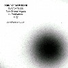
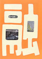

-2001.9.30
#来月は絶対就職します。
で仕事もしてないのにまたCD買っちゃいました。MOSTはとりあえず...試聴したらなんか欲しくてしょーがなくて。あとROUND HOUSEの7月の復活ライヴのCD-Rが届いていて。
関係無いけど友達が今度バリに行くんだそうです。で、電話してたんですけど。その会話の中で
俺:「えーとビザとかって要るの？」
友:「わかんなーい、バリ大使館に行かなきゃだめなのかなー？」
俺:「.....(ねーよ、バリ大使館なんて)」
あ、あと今テレビで「ドーベルマン」ってフランス映画やっててB級だけど面白かったす、キチガイ警官がイイ。
-2001.9.26
#いやー近鉄優勝しましたよ、12年振りですね。嬉しくてたまんないです、今。今年こそ日本一になって欲しいなーとか
ちょっと渋谷に行ってきたんですけど....STRANGE DAYSが狂ったように本を出してました。ブリティッシュロックのレーベルカタログ本とレコードジャケット本の2冊。カタログマニアにはたまらないのかも知れないですけど、そんなに需要が有るとは思いがたいんですけど。金欠なんでCD買うの久々、なんだかアルゼンチンの女の人のCDを。
最近の行動としては、実弟と一緒にBOAT,PANIC SMILE,DCPRGのライヴ見にいったりとか。
あと検索システムちょっと直してみました。いかがなものでしょう？
juana molina/segundo
#試聴機に入っていたのを気に入って買いました。アルゼンチンの人みたいですね....情報無いんですけど。ライナーにURLが有ったんでアクセスしてみましたけど何もないし、検索しても全然この人の情報見つかりません。ジャケットだと鼻と口しか見えないんで、是非どんな顔か見てみたいんですけど...誰か詳しい方いたら教えて下さいな。
中味は「ボサノバ + 音響」てな感じです。何かR.Wyattに通じるものが有るような儚げな世界かな？ 気分の良い淡い雰囲気です、70分有るCDとは思えないです。(2001.9.26)

- Martin Fierro
- ?Quien?
- El Perro
- !Que llueva!
- La vista
- Quiero
- Mantra del bicho feo
- El desconfiado
- El Zorzal
- El Pastor mentiroso
- Misterio uruguayo
- Vaca que cambia de querencia
- 13
- Sonamos
- Juana Molina
- Alejandro Franov
- John Baxter (electric guitar on 5.)
- Ron Aniello (dulcimer,sampling,percussions,sequence on 8.)
- David Miner (banjo on 8.)
- Fernando Kabusacki (guitars on 14.)
-2001.9.20
#時間が有ったので検索システムなんぞ作ってみました。とりあえず試験運用中って事で。
作ってて気付いたんですけど、"japanese strange music"のディレクトリでCD500枚分くらいでした、思ってたよりは多くないかなと。検索してたら自分でも忘れてたよーなHTMLファイルが検索に引っかかったりしたので、慌てて削除したり。
まぁコレで手でシコシコ更新する手間が省けるかなーとか、リンク切れとか気にしなくてイイし。
あ、物凄く久しぶりにperlを使ってみたら、かなり忘れていました。社会復帰は遠いかな？
-2001.9.18
#リンク一件追加しました、COLLAPSO -Canterbury Music Family Tree-です。素晴らしくカンタベリー周辺を網羅したページです。
で、再開した時に入り口を消したウチのページのカンタベリを再アップ。何のデータの追加も無いですけど。
ネスケ4でtableタグを使った後にcssの効果が消えるのは、やっぱりタグをちゃんと閉じて無いからかな?
-2001.9.16
#見にいきました、お台場TRIBUTE TO LOVE GENERATIONでのLars Hollmer's SOLA
やっぱりお台場って場所は苦手かも。建物の外で家族待ちながらタバコ吸ってるおっさんの気持ちがちょっとわかります。
-2001.9.14
#こないだのNYのテロの時、ちょうど2機目がビルに突っ込むくらいのときにテレビをつけて、そのまま次の日の朝までずーっと見てました。
なんだかラディン - タリバン(アフガニスタン) - パキスタン のラインでさっきイスラマバードからリポーターが中継してました。こないだ俺が盲腸の手術して入院してたところ。
地面に無理矢理ライン引いて「国境」にして、その国境の「向こう」と「こっち」で全然空気が違ってたりとか、道にフツーに自動小銃持った軍人がウロウロしてたりとか、同じ国の中でさえ宗教や民族や階層の違いですっげー確執があったりとか。
そんな事を旅行中は時々リアルに感じることも有ったんですけど.....テレビ越しのこの現実感の無さって一体？
あと、あのヤル気満々の大統領さまに「ちょい待って」って声がもう少し有っても良さそうな気がします。
-2001.9.10
#強い台風15号が北上中です。
で、行ってきました。斎藤ネコカルテット、ゲスト:ほとらぴからっに。なんだか偶然どっかの掲示板でそんな話を見つけたのが3日前でして...ほんと見れて良かったっす、ヒマ万歳。

あとcorneliusの新しいシングル(POINT OF VIEW POINT)買いました、1曲で\500。アルバム出るの待とうと思ってたんですけど、試聴機で聴いたら結構良かったんで。500円っていいですね....全てのシングルCDの値段って500円でイイと思うんですよね、カップリングいらないから。
同様の理由で、ya-to-i/The Essence Of Pop-Selfも。一曲目の篠原ともえ/DREAM & MACHINEの一曲目で使ってた曲でちょっとハマっちゃって。
まだ無職...
-2001.9.1
#ヤフーオークションで、鈴木惣一郎さんのEVERYTHING PLAYを購入...ワールドスタンダードよりもツヤツヤしたよーな質感、被写体は変わらないけど水彩画が写真になったよーな感じの。「POSH」って探してるんですけど、どっかで売ってないですかね？
あと弟からジャーマンエレクトロを何枚か借りてきました。CLUSTER/CLUSTER IIとCLUSTER/SOWIESOSO....これは良かったです。ASHRA/NEW AGE OF EARTHはイマイチ。
西荻窪BINSPARKで、シェルパとすずきあおい+荻野和夫を見てきました。
シェルパって即興ばっかりかな？とか思ってたんですけど、曲と即興とを混ぜ合わせたよーな感じで意外と聴きやすかったです。
すずきあおい+荻野和夫は、トラッドとかGHOST(聴いたこと無いけど)のカバーを。リュートとかハープとか使ってて不思議な感じでした。それにしてもすずきあおいさんって喋ってる時と歌ってる時のキャラが違いすぎる....
-2001.8.29
#新宿なんか行ってきました。収入無いのでCD屋はのぞかないよーにしてたんですけど...某プログレ屋のレジのところにRenaissance Illusion/Through The Fireなんて目を疑うようなCDが出ていたので買っちゃいました。あぁ。
ついでに初めて都庁に登ってみました、どっち向いても整然としたビルとかマンションが沢山でした。インドの廃墟に無理矢理住んでるよな街並みも変ですけど、東京は東京でかなり変だなと。
あ、あと近所の中古屋でFrank Zappa/UNCLE MEATを\1280で。
ソロソロ仕事ヲサガサナイト....
-2001.8.23
#テレビを見てたら、渡辺満里奈の梅酒のCMが流れてて。
何か日本戻れて良かったなと、しみじみ思いました。
で、歩けるようになってきました。渋谷のタワレコへ行ってきました。
DCPRG/REPORT FROM IRON MOUNTAIN
international airport/nothing we can control
など、買ってきました。あとQUICK JAPANの新しいやつ買ってきたんですけど、菊地成孔さん特集みたいな。スゴイですね、どーしちゃったんでしょう？
-2001.8.17
#帰ってきました、日本です。
パキスタンで腸チフスして、更に盲腸の手術しての強制帰国。
何でこーなんだろ？誰を笑わせたいんだろう？俺。
2ヶ月くらいほとんど音楽聴かない生活してました。そんな生活、中学生とか以来じゃないかと思います。で、非常にCD新譜とかに飢えていたので帰国早々CD買っちゃいました。
CD買うとか言っても、まだ手術痕が痛いので動き回れなくて弟にお使いいってもらいました。
空気公団/融
#これ出たの6月末で、旅行行ってる間に「日本帰ったら買うCD」の一番でした。本みたいな感じの変形ジャケット、相変わらず凝っています。
で、メジャーからのリリースになって妙に洗練されちゃったら嫌だな～なんて思ってました。
聴いてみて安心しました、なんだか包み込むような相変わらずのゆっくりしたテンポと、心地よいちょっとアンバランスな感覚。
さすがに録音はかなりクリアな感じになりました。前のカセットテープっぽい音もちょっと懐かしいんですけど、変にドライな音にはなってないんで、まぁOKかと。

- お手紙
- 夕暮れ電車に飛び乗れ
- たまに笑ってみたり (スタジオライブ)
- 動物園のにわか雨
- 田中さん、日曜日ダンス
- ビニール傘
- 線の上
- 遠く遠くトーク (スタジオライブ)
- うしろまえ公園
- 融
except track5 produced by 空気公団
- 山崎ゆかり
- 小山いずみ
- 戸川由幸
- 石井敦子
- 太田宏司 (drums on 1.2.3.6.8.9.10.)
- 棚谷祐一 (tambourine on 1.)(shaker on 4.)
- 田村玄一 (pedal steel on 2.)
- 平田佳広 (drums on 4.7.)
- 三沢泉 (percussions on 6.)
- 荒井良二 (guitars on 8.)
- 笹原清明 (hand-bell on 10.)